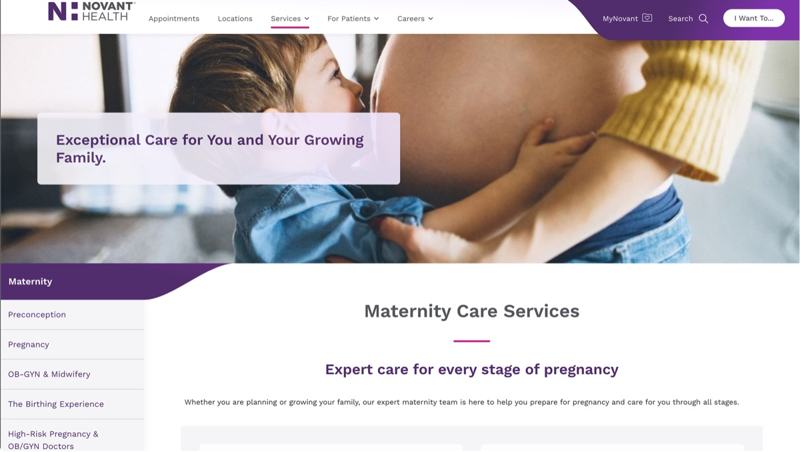

Novant Health · Done in Figma
System-Wide Website Redesign
Novant Health had a scheduling flow that technically worked, the way a filing cabinet technically works if you already know which drawer everything's in. Patients didn't have that internal map. Providers weren't much better off.
I redesigned the pieces that mattered most: appointment scheduling, provider search, the pages people hit when they're anxious and one thumb away from giving up. Tested with real prototypes, rolled out in phases, built to survive contact with an actual dev team.
Fewer people gave up mid-booking once the path stopped assuming everyone already knew where to look.
The system I built got reused by other teams, which is the only compliment that actually matters to me.
- 01
UX Audit
Reviewed data and identified user pain points
- 02
Team Alignment
Facilitated design priorities across departments
- 03
Journey Mapping
Focused on care search and scheduling flows
- 04
Accessibility Design
Ensured WCAG compliance from the start
- 05
Modular UI
Built scalable, dev-ready design components
- 06
QA & Rollout
Tested live environments and supported implementation